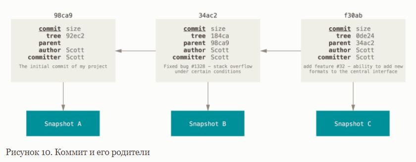
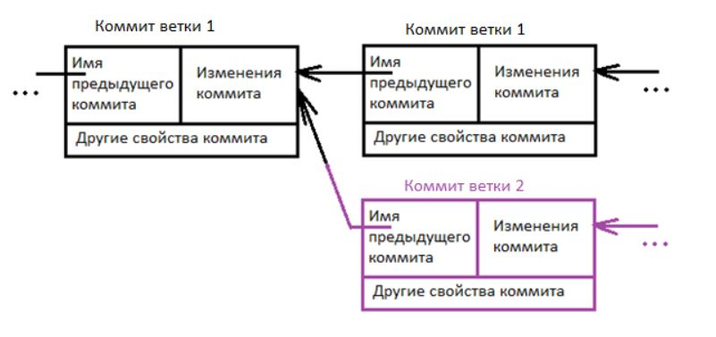

Содержание
- Что такое Git?
- В чём разница между Git, GitHub и GitLab?
- Что представляют из себя 3 области: Working directory, Staging area, Repository?
- Что такое коммит?
- Ветки
- Для чего нужен файл .gitignore?
- git config: что позволяет делать и какие три уровня конфигурации есть?
- Что делают, как и зачем использовать команды:
- Что такое Pull Request (или Merge Request)?
- Как посмотреть историю коммитов?
- К изменённым относятся файлы, которые поменялись, но ещё не были зафиксированы.
- Индексированный — это изменённый файл в его текущей версии, отмеченный для включения в следующий коммит.
- Зафиксированный значит, что файл уже сохранён в вашей локальной базе.
GIT
Что такое Git?
Система контроля версий (СКВ) — это система, записывающая изменения в файл или набор файлов в течение времени и позволяющая вернуться позже к определённой версии. GIT это одна из распределенных СКВ (есть также другие - Mercurial, Bazaar или Darcs). В РСКВ клиенты не просто скачивают снимок всех файлов (состояние файлов на определённый момент времени) — они полностью копируют репозиторий. В этом случае, если один из серверов, через который разработчики обменивались данными, умрёт, любой клиентский репозиторий может быть скопирован на другой сервер для продолжения работы. Каждая копия репозитория является полным бэкапом всех данных
В чём разница между Git, GitHub и GitLab?
Git - распределенная система контроля версий
GitLab - Git-сервер
GitHub - Git-хостинг
Что представляют из себя 3 области: Working directory, Staging area, Repository?
Working directory: рабочая копия является снимком одной версии проекта. Эти файлы извлекаются из сжатой базы данных в каталоге Git и помещаются на диск, для того чтобы их можно было использовать или редактировать.
Staging area: область индексирования — это файл, обычно находящийся в каталоге Git, в нём содержится информация о том, что попадёт в следующий коммит. Её техническое название на языке Git — «индекс», но фраза «область индексирования» также работает.
Repository: каталог Git — это то место, где Git хранит метаданные и базу объектов вашего проекта. Это самая важная часть Git и это та часть, которая копируется при клонировании репозитория с другого компьютера.
- У Git есть три основных состояния, в которых могут находиться ваши файлы: изменён (modified), индексирован
(staged) и зафиксирован (committed):
Что такое коммит?
Можно сказать, что коммит это основной объект в любой системе управления версиями. В нем содержится описание тех изменений, которые вносит пользователь в код приложения. В Git коммит состоит из нескольких так называемых объектов. Для простоты понимания можно считать, что коммиты это односвязный список, состоящий из объектов в которых содержаться измененные файлы, и ссылка на предыдущий коммит.
Когда вы делаете коммит, Git сохраняет его в виде объекта, который содержит указатель на снимок (snapshot) подготовленных данных. Этот объект так же содержит имя автора и email, сообщение и указатель на коммит или коммиты непосредственно предшествующие данному (его родителей): отсутствие родителя для первоначального коммита, один родитель для обычного коммита, и несколько родителей для результатов слияния двух и более веток. Предположим, у вас есть каталог с тремя файлами и вы добавляете их все в индекс и создаёте коммит. Во время индексации вычисляется контрольная сумма каждого файла (SHA-1 как мы узнали из Что такое Git?), затем каждый файл сохраняется в репозиторий (Git называет такой файл блоб — большой бинарный объект), а контрольная сумма попадёт в индекс:
$ git add README test.rb LICENSE
$ git commit -m 'Initial commit'
Если вы сделаете изменения и создадите ещё один коммит, то он будет содержать указатель на предыдущий коммит.
Ветки
Что такое ветка?
Ветка в Git это подвижный указатель на один из коммитов. Обычно ветка указывает на последний коммит в цепочке коммитов. Ветка берет свое начало от какого-то одного коммита. Визуально это можно представить вот так:
Важно понимать, что ветка берет свое начало не от ветки, а от последнего коммита который находиться в той ветке, в которой вы находились. Ветка обычно заканчивается специальным merge коммитом, который говорит, что ветку нужно объединить с какой-то другой веткой. В merge коммите содержатся две ссылки на два коммита которые объединяются в одну ветку.
Зачем нужны ветки?
Ветки нужны для того, чтобы программисты могли вести совместную работу над проектом и не мешать друг другу при этом. Либо чтобы один и тот же программист мог изолированно работать над разными задачами проекта
Что значит "создать ветку" и "удалить ветку" (что при этом происходит)?
При создании ветки создаётся новый указатель для дальнейшего перемещения. В момент создания ветки на коммите находятся два указателя - текущей ветки и вновь созданной. HEAD указывает на текущую ветку, т.е. мы находимся в текущей ветке, а не во вновь созданной
При удалении ветки удаляется указатель на ветвь. Фиксации(коммита) все еще остаются там после удаления ветви, до следующей сборки мусора.
Как посмотреть список веток?
$ git branch
Как сменить ветку?
$ git checkout [имя ветки, на которую переключаемся]
или
$ git switch [имя ветки, на которую переключаемся]
Можно ли переключиться на другую ветку, если в рабочей директории есть изменения?
Если рабочий каталог либо индекс содержат незафиксированные изменения, конфликтующие с веткой, на которую вы хотите переключиться, то Git не позволит переключить ветки. Есть способы обойти это (припрятать изменения (stash) или добавить их в последний коммит (amend))
Как создать ветку?
$ git branch [имя новой ветки]
Одновременное создание новой ветки и переключение на неё
git checkout -b [имя новой ветки]
или
git switch -c [имя новой ветки]
или
git switch --create [имя новой ветки]
Как переименовать ветку?
Обычная ветка (не master)
Переименуйте ветку локально с помощью команды git branch --move:
$ git branch --move bad-branch-name corrected-branch-name
$ git push --set-upstream origin corrected-branch-name
$ git branch --all
* corrected-branch-name
main
remotes/origin/bad-branch-name
remotes/origin/corrected-branch-name
remotes/origin/main
$ git push origin --delete bad-branch-name
Изменение имени главной ветки
Все то же самое, но перед удалением старой ветки (с некорректным именем) нужно сделать следующее:
- Все проекты, которые зависят от текущего, должны будут обновить свой код и/или конфигурацию.
- Обновите конфигурацию всех запускаемых тестов.
- Исправьте скрипты сборки и публикации артефактов.
- Поправьте настройки репозитория на сервере: задайте новую ветку по умолчанию, обновите правила слияния, а также прочие настройки, которые зависят от имени веток.
- Обновите документацию, исправив ссылки, указывающие на старую ветку.
- Слейте или отмените запросы на слияние изменений, нацеленные на старую ветку.
Как удалить ветку?
Для ветки, которая слита в мастер
git branch -d [имя удаляемой ветки]
Для ветки, которая не слита в мастер
git branch -D [имя удаляемой ветки]
Для чего нужен файл .gitignore?
Зачастую, у вас имеется группа файлов, которые вы не только не хотите автоматически добавлять в репозиторий, но и видеть в списках неотслеживаемых. К таким файлам обычно относятся автоматически генерируемые файлы (различные логи, результаты сборки программ и т. п.). В таком случае, вы можете создать файл .gitignore. с перечислением шаблонов соответствующих таким файлам. Вот пример файла .gitignore:
$ cat .gitignore
*.[oa]
*~
Первая строка предписывает Git игнорировать любые файлы заканчивающиеся на «.o» или «.a» — объектные и архивные файлы, которые могут появиться во время сборки кода. Вторая строка предписывает игнорировать все файлы заканчивающиеся на тильду (~), которая используется во многих текстовых редакторах, например Emacs, для обозначения временных файлов. Вы можете также включить каталоги log, tmp или pid; автоматически создаваемую документацию; и т. д. и т. п. Хорошая практика заключается в настройке файла .gitignore до того, как начать серьёзно работать, это защитит вас от случайного добавления в репозиторий файлов, которых вы там видеть не хотите.
git config: что позволяет делать и какие три уровня конфигурации есть?
- В состав Git входит утилита git config, которая позволяет просматривать и настраивать параметры,
контролирующие все аспекты работы Git, а также его внешний вид. Эти параметры могут быть сохранены в трёх
местах:
- Файл [path]/etc/gitconfig содержит значения, общие для всех пользователей системы и для всех их репозиториев. Если при запуске git config указать параметр --system, то параметры будут читаться и сохраняться именно в этот файл. Так как этот файл является системным, то вам потребуются права суперпользователя для внесения изменений в него.
- Файл ~/.gitconfig или ~/.config/git/config хранит настройки конкретного пользователя. Этот файл используется при указании параметра --global и применяется ко всем репозиториям, с которыми вы работаете в текущей системе.
- Файл config в каталоге Git (т. е. .git/config) репозитория, который вы используете в данный момент, хранит настройки конкретного репозитория. Вы можете заставить Git читать и писать в этот файл с помощью параметра --local, но на самом деле это значение по умолчанию. Неудивительно, что вам нужно находиться где-то в репозитории Git, чтобы эта опция работала правильно.
Чтобы посмотреть все установленные настройки и узнать где именно они заданы, используйте команду:
$ git config --list --show-originЧто делают, как и зачем использовать команды:
add
Это многофункциональная команда, она используется для добавления под версионный контроль новых файлов, для индексации изменений, а также для других целей, например для указания файлов с исправленным конфликтом слияния. Вам может быть понятнее, если вы будете думать об этом как «добавить этот контент в следующий коммит», а не как «добавить этот файл в проект».
commit
Команда commit фиксирует проиндексированные изменения. Коммит сохраняет снимок состояния вашего индекса. Всё, что вы не проиндексировали, так и висит в рабочем каталоге как изменённое; вы можете сделать ещё один коммит, чтобы добавить эти изменения в репозиторий. Каждый раз, когда вы делаете коммит, вы сохраняете снимок состояния вашего проекта, который позже вы можете восстановить или с которым можно сравнить текущее состояние.
Как и при каких условиях можно сделать коммит, не написав перед этим явно git add?
Добавление параметра -a в команду git commit заставляет Git автоматически индексировать каждый уже отслеживаемый на момент коммита файл, позволяя вам обойтись без git add:
Как написать сообщение для коммита не открывая редактора?
набрать свой комментарий к коммиту в командной строке вместе с командой commit указав его после параметра
-m:
$ git commit -m "Story 182: fix benchmarks for speed"
Вы забыли добавить несколько файлов в индекс и сделали коммит, но ещё не отправили изменения в удалённый репозиторий. Как можно добавить забытые файлы в сделанный коммит? Можно ли так делать, если вы забыли добавить файлы в индекс, но уже отправили сделанный коммит в удалённый репозиторий?
Если вы хотите переделать коммит — внесите необходимые изменения, добавьте их в индекс и сделайте коммит ещё раз, указав параметр --amend:
$ git commit --amend
Как сделать коммит, отменяющий изменения, сделанные в одном из предыдущих коммитов, с помощью revert?
git revert [номер проблемного коммита]
push
Когда вы хотите поделиться своими наработками, вам необходимо отправить их в удалённый репозиторий. Команда для этого действия простая: git push <remote-name> <branch-name>. Чтобы отправить вашу ветку master на сервер origin (повторимся, что клонирование обычно настраивает оба этих имени автоматически), вы можете выполнить следующую команду для отправки ваших коммитов:
$ git push origin master
Как отправить локальную ветку, которой нет в удалённом репозитории, с помощью push?
Когда вы хотите поделиться веткой, вам необходимо отправить её на удалённый сервер, где у вас есть права на
запись. Ваши локальные ветки автоматически не синхронизируются с удалёнными при отправке — вам нужно явно
указать те ветки, которые вы хотите отправить. Таким образом, вы можете использовать свои личные ветки для
работы, которую не хотите показывать, а отправлять только те тематические ветки, над которыми вы хотите
работать с кем-то совместно.
Если у вас есть ветка serverfix, над которой вы хотите работать с кем-то ещё, вы можете отправить её точно
так же, как вы отправляли вашу первую ветку. Выполните команду
$ git push [имя remote] [имя ветки], например $ git push origin my_branch
fetch
Для получения данных из удалённых проектов, следует выполнить:
$ git fetch [remote-name]
Когда вы клонируете репозиторий, команда clone автоматически добавляет этот удалённый репозиторий под именем «origin». Таким образом, git fetch origin извлекает все наработки, отправленные на этот сервер после того, как вы его клонировали (или получили изменения с помощью fetch). Важно отметить, что команда git fetch забирает данные в ваш локальный репозиторий, но не сливает их с какими-либо вашими наработками и не модифицирует то, над чем вы работаете в данный момент. Вам необходимо вручную слить эти данные с вашими, когда вы будете готовы.
Как стянуть и сразу переключиться на удалённую ветку, которой нет в локальном репозитории с помощью fetch и checkout?
git fetch --all && git checkout [имя ветки, на которую переключаемся]
merge
Эта команда осуществляет слияние веток. Например, чтобы выполнить слияние ветки hotfix с веткой master для включения изменений в продукт:
$ git checkout master // переключились на master, т.е. ветку, В КОТОРУЮ мержим
$ git merge hotfix // вливаем (вмерживаем) в ветку, в которой находимся [master] ветку hotfix
pull
Если ветка настроена на отслеживание удалённой ветки, то вы можете использовать команду git pull чтобы автоматически получить изменения из удалённой ветки и слить их со своей текущей. Этот способ может для вас оказаться более простым или более удобным. К тому же, по умолчанию команда git clone автоматически настраивает вашу локальную ветку master на отслеживание удалённой ветки master на сервере, с которого вы клонировали репозиторий. Название веток может быть другим и зависит от ветки по умолчанию на сервере. Выполнение git pull, как правило, извлекает (fetch) данные с сервера, с которого вы изначально клонировали, и автоматически пытается слить (merge) их с кодом, над которым вы в данный момент работаете.
stash
Операция stash берет изменённое состояние вашего рабочего каталога, то есть изменённые отслеживаемые файлы и проиндексированные изменения, и сохраняет их в хранилище незавершённых изменений, которые вы можете в любое время применить обратно.
Такая необходимость возникает, когда надо переключиться на другую ветку, не завершив работу в текущей ветке и, соответственно, не закоммитив изменения, сделанные в ней (т.е. когда мы не хотим делать коммит незавершенных изменений, а хотим вернуться к ним позже)
Как спрятать все изменения текущей ветки?
git stash
или
git stash push
Как посмотреть список спрятанных изменений в текущей ветке?
git stash list
Как вернуть последние спрятанные изменения и удалить запись о них в истории?
git stash drop, указав имя удаляемых изменений
или
git stash pop
Что такое Pull Request (или Merge Request)?
Если программист достаточно опытный и ответственный, то он обычно сам сливает свой код в мастер ветку. В противном случае программист делает так называемый Pull запрос. Pull запрос это по сути дела запрос на разрешение сделать merge. Pull запрос можно сделать из web интерфейса Git, или при помощи команды git request-pull. После того как Pull запрос создан, остальные участники могут увидеть это, просмотреть тот код который программист предлагает внести в проект, и либо одобрить этот код либо нет. Merge через pull запросы имеет свои плюсы и минусы. Минус в том, что для тесной команды опытных программистов такой подход будет лишним. Это будет только тормозить работу и вносить в нее оттенки бюрократии.
С другой стороны, если в проекте есть не опытные программисты, которые могут сломать код, то Pull запросы могут помочь избежать ошибок, и быстрее обучить этих программистов наблюдая за тем какие изменения они предлагают внести в код.
Так же Pull запросы подходят для широкого сообщества программистов, работающих с открытым исходным кодом. В этом случае нельзя заранее сказать что-то о компетенции таких разработчиков и о том, что они хотят изменить в коде.
Как посмотреть историю коммитов?
Командой git log
Для просмотра истории коммитов другой ветки необходимо явно указать её имя: git log testing. Чтобы посмотреть историю по всем веткам — выполните команду с дополнительным флагом: git log --all.